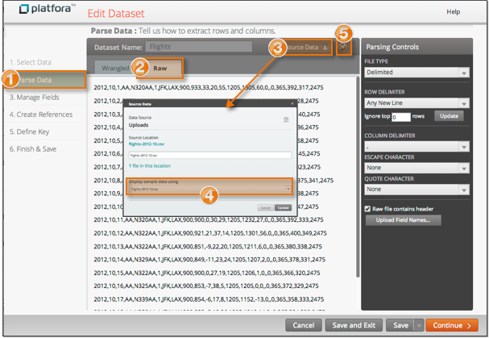

Platfora shows a sample of records taken from a source data file so you can see
the data in its original format.
For delimited data, Platfora shows a
sampling of 20 lines taken from one source file. For structured file formats, such as JSON,
Platfora shows a sampling of the first 20 top-level objects taken from one source file.
Viewing the raw data is helpful in determining the parsing logic, and when writing computed
field expressions that do transformations on base fields.
The Raw tab shows a sample of lines from a source data file.
The Wrangled tab shows the data values after the parsing
logic has been applied.

-
Open the dataset and go to the Parse Data step of the
dataset workspace.
-
Select the Raw tab.
-
To see where the sample records are coming from, click Source
Data.
-
If you want to sample records from a different source file, you can select
another file and click Update.
-
To make sure you are seeing the latest source data, click the refresh button.
The sample data rows are cached, and this will ensure that the cache is
refreshed from the source.